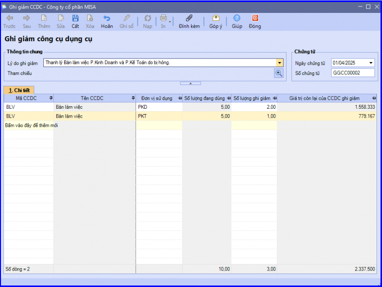
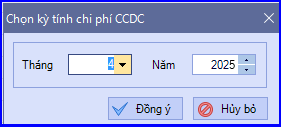
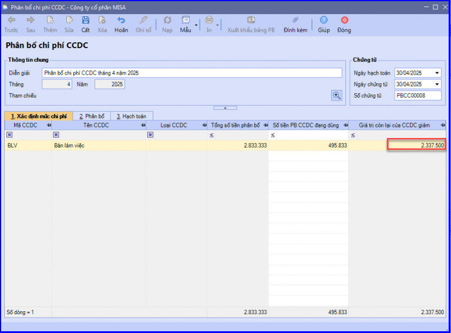
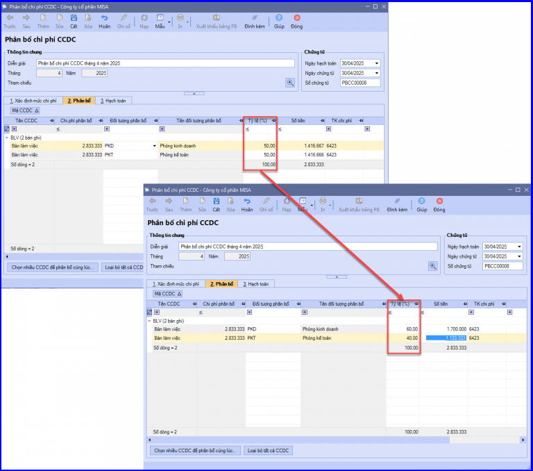
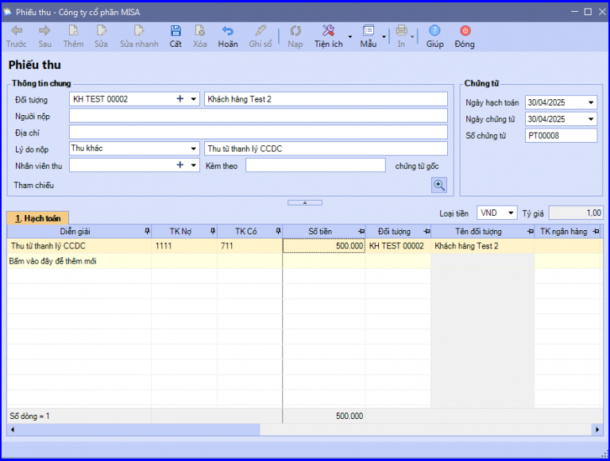
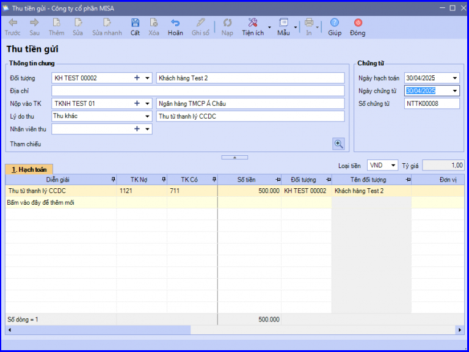
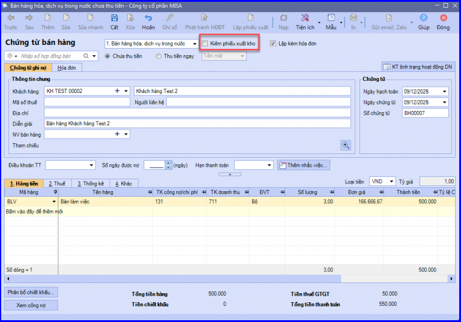

Hướng dẫn cách hạch toán ghi sổ nghiệp vụ thanh lý công cụ dụng cụ, nhượng bán CCDC trên phần mềm Misa
Công cụ dụng cụ là những tư liệu tham gia trực tiếp và có vai trò quan trọng đối với quá trình sản xuất kinh doanh của doanh nghiệp.
Giá trị công cụ dụng cụ sẽ bị khấu hao dần theo thời gian, đến một thời điểm tính năng, lợi ích của công cụ dụng cụ đó đem lại không còn đáp ứng tốt cho nhu cầu sản xuất kinh doanh của doanh nghiệp nữa.
Lúc này doanh nghiệp sẽ phát sinh nhu cầu thanh lý công cụ dụng cụ.
Giá trị công cụ dụng cụ sẽ bị khấu hao dần theo thời gian, đến một thời điểm tính năng, lợi ích của công cụ dụng cụ đó đem lại không còn đáp ứng tốt cho nhu cầu sản xuất kinh doanh của doanh nghiệp nữa.
Lúc này doanh nghiệp sẽ phát sinh nhu cầu thanh lý công cụ dụng cụ.
1. Thủ tục thanh lý công cụ dụng cụ
- Khi các bộ phận, phòng ban sử dụng trình báo về việc hư hỏng, nhu cầu đáp ứng của công cụ dụng cụ, bộ phận quản lý tài sản sẽ có trách nhiệm kiểm tra lại tình trạng sử dụng.
- Sau khi có kết quả kiểm tra, bộ phận quản lý tài sản lập phiếu báo hỏng và đề nghị hủy/thanh lý công cụ dụng cụ trình Ban lãnh đạo phê duyệt.
- Sau khi Lãnh đạo phê duyệt thanh lý, cán bộ quản lý tài sản ghi giảm trên sổ theo dõi CCDC, kế toán ghi giảm trên sổ kế toán.
2. Các bước hạch toán ghi sổ nghiệp vụ thanh lý CCDC trên phần mềm Misa
a. Phân bổ giá trị còn lại của CCDC được thanh lý trong trường hợp CCDC vẫn còn giá trị sử dụng:
- Nợ TK 623, 627, 641, 642…
- Có TK 242
b. Ghi nhận thu nhập thu được từ việc thanh lý CCDC
- Nợ 111, 112…
- Có 711 - Thu nhập khác
3. Cách thức thực hiện trên phần mềm
Bước 1: Ghi giảm CCDC được thanh lý trên sổ theo dõi CCDC
- Vào phân hệ "Công cụ dụng cụ" => chọn tab "Ghi giảm" => chọn chức năng "Thêm".
- Nhập lý do và chọn các CCDC được ghi giảm.

- Sau khi khai báo xong, các bạn ấn "Cất".
Bước 2: Cuối tháng, thực hiện phân bổ giá trị còn lại của CCDC được thanh lý vào chi phí
- Vào phân hệ "Công cụ dụng cụ" => chọn tab "Phân bổ chi phí" => chọn chức năng "Thêm".
- Chọn kỳ kế toán, sau đó ấn "Đồng ý".

- Với những CCDC đã được lập chứng từ ghi giảm trong tháng, hệ thống sẽ lấy toàn bộ giá trị còn lại của CCDC để thực hiện phân bổ.

- Hệ thống đã tự động thiết lập thông tin tỷ lệ phân bổ CCDC cho từng đối tượng liên quan, kế toán có thể thay đổi lại đúng với với thực tế của doanh nghiệp.

- Các bạn ấn "Cất".
Bước 3: Hạch toán thu nhập thu được từ việc thanh lý CCDC
Tùy thuộc vào hình thức thanh toán mà việc hạch toán được thực hiện như sau:
- Nếu thu được bằng tiền mặt thì hạch toán trên phân hệ "Quỹ".

- Nếu thu được bằng tiền gửi thì hạch toán trên phân hệ "Ngân hàng".

- Trường hợp thanh lý cần phải xuất hóa đơn thì sẽ thực hiện trên phân hệ "Bán hàng" (lập hóa đơn bán hàng không kiêm phiếu xuất kho).

KẾ TOÁN DIỆU TÂM chúc các bạn làm tốt!
=============================
Nếu bạn muốn thành thạo các kỹ năng làm kế toán trên phần mềm Misa
Thì bạn có thể tham khảo "Khóa Học Thực Hành Kế Toán Trên Phần Mềm Misa" tại Công ty đào tạo Kế Toán Diệu Tâm
Trong khóa học này, bạn sẽ được dạy cách lên sổ sách, lập báo cáo tài chính trên phần mềm Misa
Chi tiết về chương trình đào tạo bạn xem tại đây nhé: Khóa học thực hành kế toán trên Misa
=============================
=============================
Nếu bạn muốn thành thạo các kỹ năng làm kế toán trên phần mềm Misa
Thì bạn có thể tham khảo "Khóa Học Thực Hành Kế Toán Trên Phần Mềm Misa" tại Công ty đào tạo Kế Toán Diệu Tâm
Trong khóa học này, bạn sẽ được dạy cách lên sổ sách, lập báo cáo tài chính trên phần mềm Misa
Chi tiết về chương trình đào tạo bạn xem tại đây nhé: Khóa học thực hành kế toán trên Misa
=============================